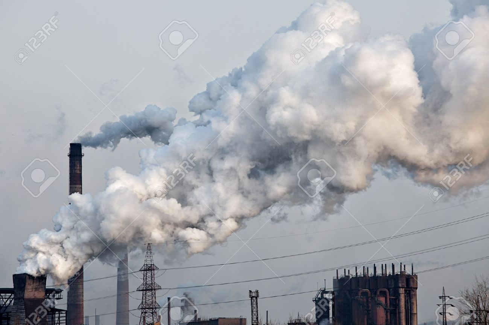
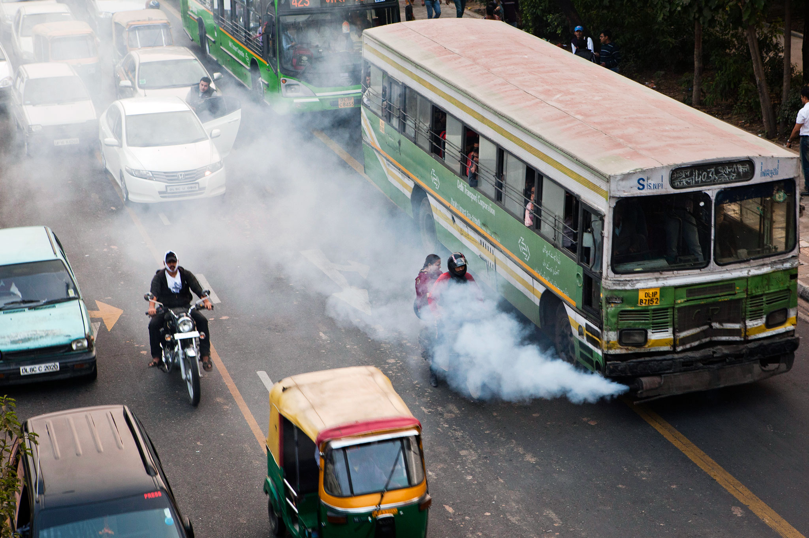

Causes of Industrial Pollution
Causes of Industrial Pollution|
A volcanic Eruption occurs when hot materials are thrown out of a volcano.Lava , rocks, dust , ash and gas compound are some of these "ejecta".A volcano is a vent or chimney which transfer molten rocks known as magma from depth to the Earth's Surface. Volcanos are just a natural way that the Earth and other planets have of cooling off and releasing internal heat and pressure. International pollution issues aren't always anthropogenically caused ; the earth in its natural , untouched state also contributes to global pollution.Volcanic eruptions release large quantities of green house gases and other aerosols into the atmosphere , these gases form massive clouds which accumulate in the atmosphere . The Volcanic Gases are_
|
|
Air Pollution by Auto Forest FiringEvery year in every nations there are hundreds,sometimes thousands ,of wildfires(also called forest fires).The smoke from these wildfires can affect the quality of the air,which can be harmful to your health.Poor air quality can be especially harmful for children , older adults, and those with heart and lung disease. |
Air Pollution by Industries and Factories With the coming of the Industrial Revolution , humans were able to advance further into the 21th century.Technology developed rapidly , science become advanced and the manufacturing age came into view.With all of these came one more effect , industrial pollution.Earlier , industries were small factories that produced smoke as the main pollutant.
Any form of pollution that can trace it immidiate source to industrial practices is known as industrial pollution.Most of the pollution on the planet can be traced back to industries of some kind.Industrial pollution takes on many faces.It contaminates many sourcre of drinking water , releases unwanted toxins into the air and reduces the quality of soil all over the world. |
 |
Causes of Industrial Pollution Effect of Industrial Pollution
Effect of Industrial PollutionAir Pollution has lead to a steep increase in various illnesses and it continues to affect us to daily basic.With so many small , mid and large scale industries coming up,air pollution has taken toll on the health of the people and the environment. Factories pollute the air through fossil fuel emissions.These emissions include carbon dioxide,methane,and nitrous oxide.Combustion creates these toxic pollutants.Industrial processes will also emit manmade emissions such as flurione-containing gases such as hydrofluorocarbons.
Air Pollution by Cars and Other MotorsYou see it every time that smoke billows from your car's exhaust pipe , so there is no denying that vehicles are major contributors to air pollution.Air pollution refers to the presence of foreign substances in the air that don't belong there,or excessive amounts of certain impurities that wouldn't harm us otherwise.When cars burn gasoline,they emit pollutants.Gasoline fumes esape into the air even when we pump gasoline into our fuel tanks. There are four major pollutants that come from cars:
|
 |
Pollutants from cars contribute to various types of air pollution.When hydrocarbons and NOx combine in sunlight , they produce ozone.High in the atmosphere , ozone protects us from the sun's ultraviolet rays.When holes in the atmosphere's ozone layer allows ozone to come closer to Earth , it contributes to smog and causes respiratory problems.
Emissions from cars increase the levels of carbon dioxide and other greenhouse gases in the atmosphere.At normal levels, greenhouse gases keep some of the sun's heat in the atmosphere and help warm Earth.That said, many scientists believe that burning fossil fuels such as gasoline causes greenhouse gas levels to spike , leading to global warming.
Scientists use sophisticated instruments to measure concentrations of harmful substances in the air,but it is tough to say exactly what percentage of air pollution comes from cars.This makes sense,because many other human activities contribute to air pollution as well.In fact , the production of electricity by coal-fired power plants and other sources can cause more pollution than most cars.If that wasn't enough, we pollute the air when we heat our homes and public buildings with fuels other than electrticity_just as we do when we drive our cars.Even people who don't drive add to pollution when they buy goods and services that involve fuel when they're made or delivered.
The percentage of air pollution caused by car is higher in urban areas and higher still near major highways.
People can help by driving less.If you have to get out of the house,combine trips for efficiency.Walk,bike,carpool or use public transportation if you can.
Air Pollution by Garbage FiringBurning garbage is a common habit across the city.Summer time is also a time when many trees start sheeding their leaves , and roads and pilled up with leaves.An essay method to dispose them off is to burn them!
The most dangeraous emissions can be caused by burning plaatics containing organoch-lor-based substances like PVC.When such plastics are burned,harmful quantities of dioxins, a group of highly toxic chemicals are emitted.Dioxins are the most toxic to the human organisms.
An estimated 40 to 50 percent of the garbage is made up of carbon by mass,which means that carbondioxide is the major gas emitted by trash burning....The more interesting and concerning story to Wiedinmyar are the other pollutants, which accounted for far bigger percentages of global emissions.
Don't burn your garbage.Burning your household garbage is dangerous to your health and our environment,and generally against the law in Minnesota.If you are still using a burn barrel,wood stove ,or fire-pit for your trash,it's time for a change.
The toxic gaseous chemicals released during burning of plastics include nitrogen oxides,sulphur dioxide ,volatile organic chemicals(VOCs)and polycyclic organic matter(POMs-a solid residue leftover).Burning plastics also releases heavy metals and toxic chemicals such as dioxin.
When plastic bags burn, the composition of the bag mixed with the heat produces a highly toxic chemical called dioxin.Dioxin have been linked to cancer , can interfere with the endocrine gland system which produces homones, and have been known to affect both the immune system and reproduction.
|